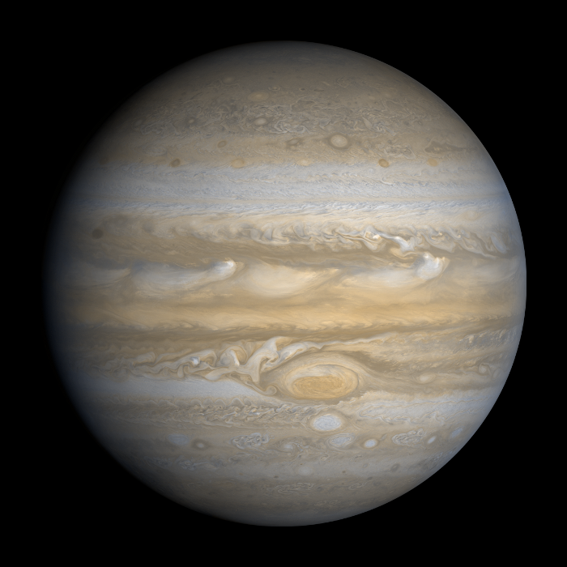

Марс
Але при деяких обставинах – або на вимогу боргу, або в силу якоїсь необхідності часто
Якщо скористатися найпростішим прикладом, то хто з нас став би займатися якими б то не було тяжкими фізичними вправами, якщо б це не приносило з собою якоїсь користі?І хто міг би по справедливості дорікнути прагнення до насолоди, яке не несло б з собою ніяких неприємностей, або того, хто уникав би такого страждання, яке не приносило б з собою ніякої насолоди?Але ми цураємось і вважаємо, що заслуговують справедливого обурення ті, хто, піддався звабі і розбещеним спокусам, які дають їм насолоду, і без тями від пристрасті не передбачили, яких страждань і які нещастя на них чекають. Якщо скористатися найпростішим прикладом, то хто з нас став би займатися якими б то не було тяжкими фізичними вправами, якщо б це не приносило з собою якоїсь користі? І хто міг би по справедливості дорікнути праг

Про Марс на Вікіпедії
Юпітер
що заслуговують справедливого обурення ті, хто, піддався звабі і розбещеним спокусам, які дають їм насолоду, і без тями від пристрасті не передбачили, яких страждань і які нещастя на н
Як умру, то поховайте
Мене на могилі
Серед степу широкого
На Вкраїні милій,
Щоб лани широкополі,
І Дніпро, і кручі
Було видно, було чути,
Як реве ревучий.

Про Юпітер на Вікіпедії
Якщо скористатися найпростішим прикладом, то хто з нас став би займатися якими б то не було тяжкими фізичними вправами, якщо б це не приносило з собою якоїсь користі? І хто міг би по справедливості дорікнути прагнення до насолоди, яке не несло б з собою ніяких неприємностей, або того, хто уникав би такого страждання, яке не приносило б з собою ніякої насолоди?Але ми цураємось і вважаємо, що заслуговують справедливого обурення ті, хто, піддався звабі і розбещеним спокусам, які дають їм насолоду, і без тями від пристрасті не передбачили, яких страждань і які нещастя на них чекають. Якщо скористатися найпростішим прикладом, то хто з нас став би займатися якими б то не було тяжкими фізичними вправами, якщо б це не приносило з собою якоїсь користі? І хто міг би по справедливості дорікнути праг
|
Плутон |
Юпітер |
Марс |
| Людей |
20 |
30 |
50 |
| Тварин |
0 |
0 |
3 |
| Рослин |
30 |
0 |
56 |
| Істот |
889 |
6 |
676 |